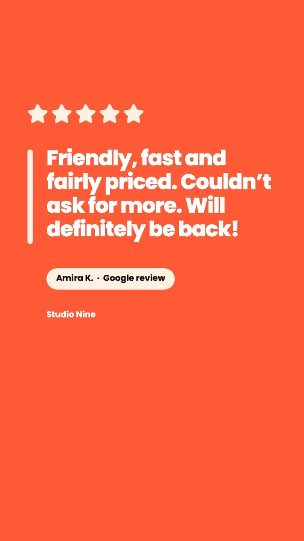
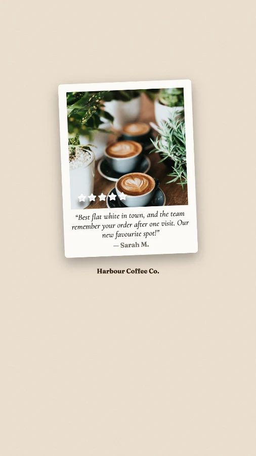

How to share Google reviews on Instagram Stories and Reels
Make a 1080×1920 image of the review and keep the text out of the top 14% and bottom 35%, where Instagram’s buttons sit. Post it as a Story with a link sticker to your Google reviews or booking page, then save it to a “Reviews” Highlight so it stays on your profile. To reach new people, turn the same image into a Reel by adding music.
Feed posts are for people browsing your profile. Stories reach the people who already follow you, every day, and Reels are how Instagram shows you to people who don’t. A review works in both, as long as the text isn’t hidden behind Instagram’s buttons.
Step 1: Use the full-screen size
| Where | Size (pixels) | Shape |
|---|---|---|
| Instagram Story | 1080 × 1920 | 9:16 tall |
| Instagram Reel | 1080 × 1920 | 9:16 tall |
| Facebook Story, TikTok, WhatsApp Status | 1080 × 1920 | 9:16 tall |
Don’t just post your square feed image as a Story. Instagram puts it in the middle with blurred or coloured bands above and below, and the review ends up small. A tall image fills the screen and is easier to read.
Step 2: Keep the review inside the safe zone

Profile name Caption & buttonsInstagram lays its own interface over the top and bottom of every Story and Reel:
- Top 14% (about 270px): your profile picture, name and the progress bar.
- Bottom 35% (about 670px) on Reels: the caption, audio name, and the like, comment and share buttons. On Stories it’s the reply bar, which is smaller.
- Right edge on Reels: the button column, so keep a little extra space on that side.
Designing to the Reels limits means the same image works as a Story and a Reel.
Step 3: Post it as a Story that does something
- Add a link sticker. Link to your booking page, menu or your Google reviews, so people can act while they’re interested. Place it in the empty bottom area, above the reply bar.
- Mention the customer only if they’re happy to be tagged. They’ll often reshare it to their own Story.
- Add a poll or question sticker now and then, like “Have you tried the flat white yet?”, which gets people tapping.
Step 4: Save it to a “Reviews” Highlight
Stories disappear after 24 hours. Highlights don’t. Tap Highlight on the Story and add it to one called “Reviews” (or ⭐). It sits under your bio, where it’s often the first thing a new visitor taps when deciding whether to trust you.
Give the Highlight a simple cover in your brand colour with a star, and keep adding to it. A Highlight of 10 to 20 reviews is far more convincing than one.
Step 5: Turn the same image into a Reel
Reels are shown to people who don’t follow you yet, so they’re the best way to put a review in front of new customers. You don’t need video:
- Start a new Reel and choose the 1080×1920 review image from your camera roll.
- Add music, or record a short voiceover reading the review.
- Set how long the image shows. Five to seven seconds gives people time to read a short review.
- Write a caption with your location, so local people see it.
Short reviews work best here. If someone can’t read it before it loops, use the review’s best line as a headline.


Story and Reel-size review images, made with ReviewPost. Each keeps the bottom clear for Instagram’s buttons.
Making the image
By hand
In a free design tool, create a 1080×1920 design, add guides at 270px from the top and 670px from the bottom, and keep the review text between them. Add stars, the customer’s first name and initial, and your logo. Allow about 15 minutes.
In one click
The ReviewPost Chrome extension adds a Make post button under reviews on Google Maps and Trustpilot. Choose Story / Reel (1080×1920) and it lays the review out inside the safe zone automatically. You can also download the feed post and LinkedIn sizes at the same time.
Common questions
What size is an Instagram Story or Reel?
1080×1920 pixels, a 9:16 tall rectangle. The same size works for Facebook Stories, TikTok and WhatsApp Status.
Where should text go on an Instagram Story or Reel?
Keep important text out of the top 14% of the image, where your profile name sits, and the bottom 35%, where Reels show the caption and like, comment and share buttons and Stories show the reply bar. Keeping to the Reels limits means one image works for both.
Can I turn a review image into a Reel?
Yes. Start a new Reel, choose the 1080×1920 review image from your camera roll, add music or a voiceover, and set how long it shows. A few seconds is enough to read a short review.
How do I keep review Stories after 24 hours?
Add each review Story to a Highlight called Reviews. Highlights stay on your profile under your bio, so new visitors see your reviews straight away.
Story-ready review images in one click
Free Chrome extension. Safe zones handled for you. Works on Google Maps and Trustpilot.
Add ReviewPost to Chrome